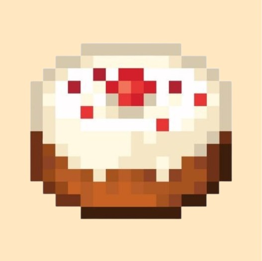
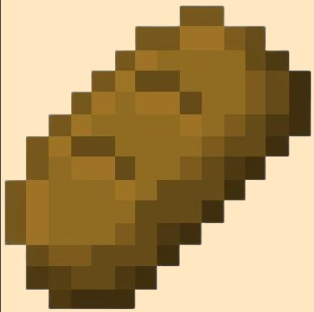
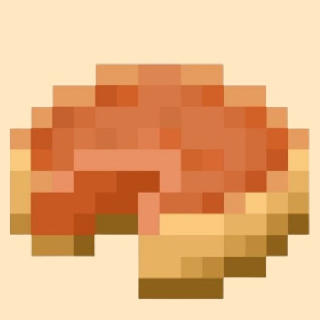

Cookie
O cookie é um doce simples feito com trigo e grãos de cacau. Pequeno e prático, ele é perfeito para um lanche rápido durante as aventuras.
O cookie é um doce simples feito com trigo e grãos de cacau. Pequeno e prático, ele é perfeito para um lanche rápido durante as aventuras.

O bolo é uma sobremesa especial que pode ser colocada no mundo e consumida em várias fatias. Feito com leite, ovos, açúcar e trigo, é perfeito para compartilhar com outros jogadores.

O pão é um dos alimentos mais básicos e fáceis de fazer no Minecraft. Produzido a partir de trigo, ele é uma ótima fonte de energia para começar a sobrevivência.

A torta de abóbora é um doce nutritivo feito com abóbora, açúcar e ovo. É uma das comidas mais completas do jogo e ideal para recuperar bastante energia.